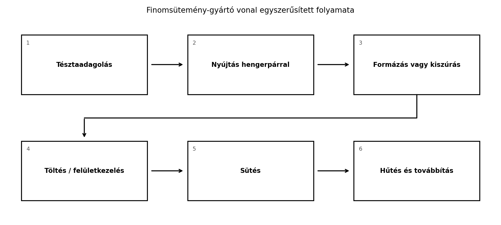

Egy hajnali műszakban a pék leveles tésztát készít, és a megadott 3 mm-es lapvastagságot csak több, fokozatosan csökkenő hengerrésű nyújtással tudja elérni. Ha egyszerre túl sokat zár a hengerrésen, a tészta szakad, a vajréteg kitüremkedik, a tésztafelület ragad, és a gép is túlterhelődik. Ugyanez a nyújtógép segít a mézeskalács-lap és a finomsütemény-alap egyenletes vastagságának kialakításában. A gépek kezelése előtt azonban a tanulónak tudnia kell, hogyan épül fel a nyújtógép, hol vannak a védőrácsok és vészkapcsolók, és hogyan kell a tésztalapítót, a gyártósort és a feldolgozó asztalt biztonságosan, higiénikusan használni.
A gyártósor egymás után kapcsolt gépekből és szállítószalagokból áll. Az alábbi folyamatábra a tipikus finomsütemény-vonal lépéseit mutatja, a tésztaadagolástól a hűtésig. A lépések sorrendje a termékfajtától függően változhat, de minden szakaszon a tészta folyamatosan halad, miközben a kezelő ellenőrzi a paramétereket.

Az ábra azt mutatja, hogy a gyártósoron a tészta útja egyirányú, és minden gépnek megvan a maga biztonsági feladata. A kezelő nem nyúlhat a mozgó szalagok közé, és csak a betanított beavatkozási pontokon dolgozhat.
Definíció. A nyújtógép olyan tésztafeldolgozó gép, amely két vagy több, ellentétes irányban forgó henger közé vezetett tésztát fokozatosan csökkenő hengerrésen vezet át, így a tésztalapot egyenletes vastagságúra nyújtja.
A nyújtógép fő részei. A gép váza, a hajtómű, a hengerpár (vagy hengersor), a hengerrés-állító szerkezet, a tésztafelhordó és -elvezető asztalok, a kaparókések, a lisztező berendezés, valamint a biztonsági berendezések. A hengereket általában krómozott acélból vagy élelmiszeripari műanyaggal bevont felülettel készítik, hogy a tészta ne tapadjon le. A hengerrés értéke a két henger közötti távolságot jelenti, például 0,5 mm-től 20 mm-ig állítható. Az állítást kézikerékkel, emelőszerkezettel vagy gépi úton végzik, és a beállított értéket skála mutatja.
Szalagirány-váltás. A nyújtógép gyakran oda-vissza nyújt: a kezelő a tésztát az egyik oldalon beadagolja, a másik oldalon kifutó lapot visszafordítja, a hengerrést egy fokozattal csökkenti, majd a tésztát ismét átvezeti. Ezt nevezik szalagirány-váltásnak, mert a tészta haladási iránya minden menetben megfordul. A folyamatos üzemű nyújtógépnél több hengerpár van egymás után, és a tészta egy irányban halad, miközben a rés fokozatosan csökken.
Az ábra felső része az asztali nyújtógép sematikus metszete: 1 váz, 2 ellentétesen forgó hengerpár, 3 hengerrés-állító kar skálával, 4 a két szalagos asztal, 5 kaparókések, 6 lisztező, 7 reteszelt védőrács a hengerek két oldalán, 8 vészleállító, 9 szalagirány-kapcsoló vagy lábpedál; a hengerek előtti behúzási pont sraffozva. Az alsó három kocka az oda-vissza nyújtás egy menetét mutatja.
A rést menetenként csak egy fokozattal szűkítsd (a képsor 10 → 8 mm-es értéke tanulási példa): a túl nagy lépés szakítja a lapot, a leveles tésztánál összenyomja a rétegeket. A HTML-kiadásban a menet léptethető, és kipróbálható, hogy a védőrács felemelésekor a hengerek megállnak.
Gépbiztonság. A hengerek becsíphetik a kezet, az ujjat, a ruhát. Ezért minden nyújtógépen kötelező a védőrács, a burkolat vagy a fényfüggöny, amely megakadályozza a kéz hengerek közé jutását. A védőburkolat reteszelt: ha valaki kinyitja, a gép leáll. A kezelő soha nem távolíthatja el a védőrácsot, és nem dolgozhat a gép mellett, ha a vészleállító nem működik. A tisztítást, a kaparók igazítását és minden, a hengerek közé nyúlással járó beavatkozást csak leállított, áramtalanított, újraindítás ellen biztosított gépen szabad végezni, a mozgó részek teljes megállása után. A hengerrés menet közbeni állítása csak a védőzónán kívül lévő résállító karral, a gépkönyv szerint megengedett (ellenőrizendő: gépkönyv). A gépkönyvben megadott kenési pontokon kizárólag élelmiszeripari, H1 minősítésű kenőanyag használható, és a felesleget le kell törölni.
Higiénia. A tészta útjába kerülő felületeket minden műszak végén le kell kaparni, majd élelmiszeripari tisztítószerrel lemosni, fertőtleníteni, és tiszta vízzel öblíteni. A lisztező berendezésben ragadt tészta- és vajmaradék romlást okozhat, ezért a lisztező csúszdákat és a kaparókéseket is rendszeresen ellenőrizni kell. A berendezés alatti padlóra hullott lisztet és tésztadarabokat haladéktalanul el kell távolítani, nehogy kártevő csalogatóvá váljon.
Ellenőrzési pontok (minőség, higiénia). A nyújtógép esetében HACCP-szempontból az idegenanyag-kockázat (levált tészta, kopott tömítésdarab, kenőanyagcsepp) a legfontosabb, ezért a műszak elején ellenőrizni kell, hogy a hengerrésből nem hullott-e idegen anyag a tésztába (ez HACCP-pont). Minőség. A tészta hőmérséklete a nyújtás közben emelkedhet, ami a leveles tészta vajrétegének megolvadásához és a rétegek összefolyásához vezet; ez minőségi (rétegződési) kérdés, nem élelmiszer-biztonsági veszély. Ezért a gépet hűvös helyiségben, vagy a tésztát hűtött szünetekkel, adagonként kell nyújtani; a tészta hőmérséklete nyújtáskor kb. 16–18 °C (tanulási példa, a zsiradék típusától függ; ellenőrizendő: üzemi technológiai lap, gyártói adatlap).
Továbbvitt eredmény. A nyújtógép biztonságos üzemeltetése és a fokozatos hengerrés-csökkentés elve nélkülözhetetlen a Leveles tészta: hagyományos és leveles margarinos eljárás alfejezetben leírt hajtogatáshoz, valamint a Mézes tészta feldolgozása és töltése alfejezetben szereplő mézeskalács-lap készítéséhez. A kézi nyújtás és hajtogatás gyakorlatát a leveles tésztánál is a Leveles tészta: hagyományos és leveles margarinos eljárás alfejezetben gyakoroljuk; a nyújtófa kezelését ez az alfejezet tárgyalja.
Definíció. A tésztalapító gép folyamatos üzemű berendezés, amely a beadagolt tésztát egyenletes, előre beállított vastagságú lappá nyújtja, és szállítószalagon továbbítja.
A tésztalapító a nyújtógépnél termelékenyebb, mert a tésztát nem szakaszosan, hanem folyamatosan dolgozza fel. A tésztát feladó garatból vagy adagolóból a hengerpár elé juttatják. A hengerek a tésztát a kívánt vastagságra lapítják, majd a lap egy szállítószalagra kerül. A végén általában egy vágószerkezet, kiszúró vagy feltekerő egység található, amely a kész lapot formázza. A tésztalapító gép beállítási paraméterei: a hengerrés, a szalagsebesség, a lisztezés mértéke, valamint a tészta belépési hőmérséklete. A védőburkolatok itt is reteszeltek, és a szalagok becsípési pontjait védőlemezek takarják.
A tésztalapító gép hűtött hengerekkel is készülhet, ami a leveles tészta vajrétegének megőrzését segíti. A hűtött felületről a tészta könnyebben leválik, és a vaj nem olvad bele. A hűtőközeg hőmérsékletét a gépkönyv szerint kell beállítani, és a hűtőkörben élelmiszeripari fagyálló folyadék keringhet, amelynek csepegése élelmiszerbiztonsági kockázat, ezért a csatlakozásokat rendszeresen ellenőrizni kell (ellenőrizendő: gyártói adatlap, HACCP-terv).
Továbbvitt eredmény. A tésztalapító fogalma és a folyamatos lapképzés elve visszaköszön a Finom pékáruk kelesztése, sütése és befejező műveletei alfejezetben, ahol a leveles termékeket gyártósoron készítik, és ugyanott a kézi nyújtás és hajtogatás gyakorlatában.
A finomsütemény-gyártó vonal több gép összehangolt együttese. A vonal felépítése terméktől függ, de tipikus elemei a következők:
A gyártósor kezelője általában egyszerre csak egy-egy szakaszt felügyel. A vonal automatikus vezérlése a szalagsebességet, a hengerrést, a sütő hőmérsékletét és a hűtést szabályozza. A kezelő a betanítás után ellenőrzi a termék méretét, színét, a töltelék mennyiségét, és a vészleállítókat. A vonal minden becsípési pontján, a szalagok és hengerek találkozásánál védőburkolat, védőrács vagy fényfüggöny van. A gyártósor tisztítása csak leállított, áramtalanított állapotban történhet, gyakran szerelői közreműködéssel, mert a szalagok megemelése speciális szerszámot igényel.
HACCP. A gyártósoron a kritikus pontok közé tartozik a sütőben elért maghőmérséklet (átsültség), a töltelékek hűtve tartása, az idegenanyag-ellenőrzés (fémdetektor, ha van), valamint az allergén-keresztszennyeződés megelőzése, ha többféle terméket gyártanak ugyanazon a vonalon. A termékváltáskor a teljes felületet, a szalagokat és a kiszúrókat át kell tisztítani, mert a maradék tészta allergén-összetevőt vihet át a következő termékbe. Az erre vonatkozó határértékeket és az ellenőrzési gyakoriságot a pékség HACCP-terve rögzíti (ellenőrizendő: üzemi HACCP-terv, hatósági útmutató).
Gépbiztonság. A gyártósor vészleállító zsinórját vagy gombjait a kezelőnek ismernie kell, és szükség esetén azonnal meg kell nyomnia. A védőburkolat kiiktatása, a reteszelés áthidalása tilos, mert a mozgó szalag vagy henger súlyos, maradandó sérülést okozhat. A gépet csak betanítás után, felügyelettel szabad kezelni.
Definíció. A feldolgozó asztal (tábla) a tészta kézi osztására, gömbölyítésére, nyújtására, formázására és díszítésére szolgáló, sima, könnyen tisztítható munkafelület.
Anyaguk. A mai élelmiszeripari gyakorlatban a feldolgozó asztal leggyakrabban rozsdamentes acélból készül, mert ellenáll a savaknak, a sónak, a tisztítószereknek, és nincs repedése, amelyben tészta- vagy kórokozó maradhat. Más elfogadott anyag az élelmiszeripari minősítésű műanyag (például nagy sűrűségű polietilén) és a keményfa. A fát ma már ritkábban használják, mert a vágásokban, repedésekben liszt- és nedvességmaradék telepedhet meg, és a fa nehezebben fertőtleníthető. Ha fa asztalt használnak, azt rendszeresen le kell csiszolni, és a felületét élelmiszeripari olajjal kell kezelni, de ez külön higiéniai kockázatot jelent (ellenőrizendő: az üzemi GHP-előírás).
Minőségi követelmények. A munkafelület legyen sima, repedés-, horpadás- és sorjamentes, stabil, a padlóhoz rögzíthető, és a tisztítószernek ellenálló. A lába állítható magasságú legyen, hogy a munkamagasság a dolgozó testmagasságához igazítható legyen. Az asztal alatt lábazati vagy takarólemez csökkenti a por és szennyeződés felhalmozódását.
Tisztítás. Minden műszak megkezdése előtt és minden termékváltás után az asztal felületét élelmiszeripari tisztítószerrel le kell mosni, majd fertőtleníteni és tiszta vízzel öblíteni. Száraz tésztamaradékot kaparóval, nem pedig éles fémmel kell eltávolítani, hogy a felület ne karcolódjon. A nedves felületet egyszer használatos papírtörlővel vagy tiszta, kijelölt textíliával le kell törölni, és hagyni kell megszáradni. A felületet nem szabad törött, repedt eszközzel tisztítani, mert a levált darab idegenanyag lehet.
Kéziszerszámok.
Az alábbi tabló a kéziszerszámokat mutatja 10 cm-es léptékkel (1 fa és 2 műanyag nyújtófa, 3 tésztavágó, 4 fűrészes és 5 sima kés, 6 hajlékony műanyag és 7 merev rozsdamentes kaparó, 8 kiszúrók, 9 a rozsdamentes asztallap), alatta a négy higiéniai ellenőrzési pontot: repedt fa nyújtófa, csorba késél, tésztamaradék a kiszúró belső peremén – ezek selejtek vagy tisztítandók –, valamint a helyes, függőleges, szellőző tárolást.
A HTML-kiadásban egy szerszámra mutatva megjelenik a neve, az anyaga és a fenti tisztítási-tárolási szabálya.
Allergén. Ha ugyanazt az asztalt vagy szerszámot tojásos, tejes, szezámos termékhez és mentes termékhez is használják, akkor a keresztszennyeződés elkerülésére a termékváltást alapos tisztításnak kell megelőznie. A „mentes” állítású termékekhez külön, jól elkülönített szerszámkészletet kell használni, és a tárolás során is el kell különíteni azokat. Az 1169/2011/EU rendelet szerinti allergéneket a termék jelölésén fel kell tüntetni, és a gyártósor allergén-keresztszennyeződési kockázatait a HACCP-tervnek kell tartalmaznia (ellenőrizendő: 1169/2011/EU rendelet II. melléklet, üzemi HACCP-terv).
Cél: A nyújtógép biztonságos beindítása, a tészta egyenletes nyújtása, a gép leállítása és tisztítása, valamint a feldolgozó asztal és kéziszerszámok higiénikus előkészítése.
Eszközök és anyagok: nyújtógép, tésztadarab (például 1,5 kg leveles tészta), lisztező kézi szita vagy lisztszóró, rozsdamentes feldolgozó asztal, műanyag kaparó, nyújtófa, tiszta kendő, élelmiszeripari tisztítószer, fertőtlenítőszer, tiszta víz, H1 kenőanyag a gépkönyv szerint.
Higiénia. A tanuló tiszta munkaruhát, hajhálót visel; ékszert, gyűrűt, karórát nem visel. Kezét a kézmosási előírás szerint megmossa. A munkaterületet ellenőrzi: az asztal tiszta, száraz, a padló nem csúszik, a gépek környéke por- és tésztamaradék-mentes. Fertőző betegség tüneteivel, gennyes kézsérüléssel nem dolgozhat.
Gépbiztonság. A nyújtógép csak betanítás után, felügyelettel kezelhető. Üzem előtt ellenőrizni kell: a védőburkolat és a védőrács a helyén van, a reteszelés működik, a vészleállító gomb benyomásakor a gép leáll, a hengerrés-állító szerkezet könnyen mozog, a kaparókések nincsenek letörve, a gép alatt nincs idegen tárgy. Sérülés gyanúja esetén a gépet nem szabad elindítani, a hibát jelenteni kell.
Lépések:
Ellenőrzési pontok (minőség, higiénia): a beállított hengerrés megfelelő, a tésztahőmérséklet a megadott tartományban van (minőségi pont), a munkafelület és a szerszámok tiszták, idegenanyag nem látható (HACCP-pont). A dokumentálást a műszaknaplóban és a tisztítási naplóban kell elvégezni, a HACCP-terv szerinti értékeket rögzíteni (ellenőrizendő: üzemi HACCP-dokumentáció).
Tipikus hibák a gyakorlatban: túl nagy hengerrés-csökkentés, a tészta túl meleg, a védőburkolat felnyitva hagyása, a szerszámok nem teljesen megszáradva tárolása.
Egy pékségben a tanuló a leveles tészta nyújtása közben a gép védőrácsát fel akarta hajtani, hogy közelebbről lássa a henger résbe vezetést. A betanító pék azonnal leállította a gépet, és elmagyarázta, hogy a védőrács kinyitásakor a reteszelés leállítja ugyan a gépet, de a mozgó hengerek még néhány másodpercig forognak, és a kéz becsípődhet. A tanuló ezután a szalagirány-váltásnál is csak a kijelölt fogási pontokon érintette a tésztát. Később ugyanaz a tanuló a feldolgozó asztalt szálkás, repedt fa kaparóval tisztította; a repedésekben tésztamaradék maradt, egy szálka a tésztába került, a maradék pedig a következő tételnél barna pöttyöket okozott. Helyes: ép, sima műanyag vagy rozsdamentes kaparó.
A nyújtott tésztalapot vastagságmérővel vagy tolómérővel ellenőrzik, és a mért érték a technológiai lapon megadott tűrésen belül van (ellenőrizendő: üzemi technológiai lap). A felület sima, nincs rásült tésztadarab, idegen anyag. A leveles tésztánál a vajréteg nem üt át, a tészta nem ragad, és a széle ép. A feldolgozó asztal és a szerszámok tisztaságát szemrevételezéssel, szükség esetén ATP-műszerrel ellenőrzik (ellenőrizendő: a pékség tisztítási ellenőrzési terve). A gépek biztonsági elemeit (vészleállító, retesz, védőburkolat) minden műszak elején próbával ellenőrzik, és az eredményt a gépnaplóba jegyzik.
1. feladat (A). Sorold fel a nyújtógép fő részeit, és írd le egy mondatban a hengerrés fogalmát!
2. feladat (A). Miért kell a nyújtógépnél a hengerrést fokozatosan csökkenteni? Adj meg egy tipikus lépéssort 10 mm-ről 3 mm-re!
3. feladat (B). Egy feldolgozó asztal rozsdamentes acélból készül, és a felülete 120 cm × 80 cm. A tisztításhoz élelmiszeripari fertőtlenítő oldatot használnak, amelyből 1 liter kell 10 m² felületre. Mennyi oldatot kell készíteni az asztal tisztításához? A számítást a mértékegységekkel együtt végezd el!
4. feladat (B). A gyártósoron a tésztalapító gép 0,5 m/s szalagsebességgel továbbítja a tésztát. A sütő előtti hűtőszakasz 6 m hosszú. Mennyi idő alatt halad át a tészta a hűtőszakaszon? Ellenőrizd az eredményt!
5. feladat (C). Egy pékségben a leveles tészta nyújtásakor a tészta a hengerre tapad. A kezelő több lisztet szór a tésztára, de a helyzet nem javul. Mi lehet a hiba, és mit kellene ellenőriznie? Javasolj legalább két okot és a hozzá tartozó javítást!
6. feladat (D). A gyakorlati útmutató szerint mit teszel, ha a nyújtógép védőburkolatán repedést látsz? Írd le a biztonságos eljárást lépésenként, és nevezd meg, kinek kell jelenteni!
1. feladat (A). A nyújtógép fő részei: gépváz, hajtómű, hengerpár, hengerrés-állító szerkezet, tésztafelhordó és elvezető asztalok, kaparókések, lisztező berendezés, biztonsági berendezések (védőrács, retesz, vészleállító). A hengerrés a két henger közötti távolság, amely meghatározza a kinyújtott tészta vastagságát.
2. feladat (A). Azért kell fokozatosan csökkenteni, mert a tészta rugalmas, és a hirtelen nagy nyomás hatására szakad, a leveles tészta vajrétege kinyomódik. Példa: 10 mm → 8 mm → 6 mm → 4 mm → 3 mm. Minden lépés után a tésztát szalagirány-váltással visszavezetjük. A lépések között a tésztát pihentethetjük, ha túl meleg vagy feszül.
3. feladat (B). Adott: a felület (mert ). Az oldatszükséglet: . Tehát körülbelül 100 ml oldatot kell készíteni, és a tisztítószer adagolását a gyártói utasítás szerint elvégezni. Ellenőrzés: 1 l jut 10 m²-re, tehát 0,1 l/m²; .
4. feladat (B). Adott: , . Az idő: . Ellenőrzés: a szalag 12 másodperc alatt utat tesz meg, tehát a számítás helyes.
5. feladat (C). Lehetséges okok: (1) a tészta túl meleg, ezért a benne lévő vaj megolvad, és ragad. Javítás: hűtsük vissza a tésztát 16–18 °C-ra, és a helyiséget is hűtsük. (2) A henger felülete sérült, vagy a kaparókés nem megfelelően van beállítva, ezért a tészta ráragad. Javítás: ellenőrizzük a henger felületét, a kaparók épségét, és szükség esetén állítsuk be vagy cseréljük. A liszt önmagában nem elég, mert ha a tészta meleg, a liszt felszívja a nedvességet, de a ragadás megmarad.
6. feladat (D). Ha a védőburkolaton repedést látsz, a gépet azonnal leállítom, a főkapcsolót lekapcsolom, és a dugaszt kihúzom. A kapcsolóra „Tilos bekapcsolni – meghibásodás” táblát teszek. A gépet nem használom, a hibát beírom a gépnaplóba, és jelentem a műszakvezetőnek vagy a karbantartónak. Csak a javítás után, a biztonsági próba elvégzését követően szabad újra használni.
A nyújtógép hengerpárja közötti hengerrést fokozatosan csökkentve, szalagirány-váltással érjük el a kívánt egyenletes tésztavastagságot. A tésztalapító gép folyamatos üzemű, szalagon továbbítja a lapított tésztát. A finomsütemény-gyártó vonal egymáshoz kapcsolt adagolóból, nyújtó- vagy lapítógépből, formázóból, töltőből, sütőből és hűtőből áll. Minden gépnél a védőrács, retesz és vészleállító működése kötelező; a tisztítás és beavatkozás csak leállított, áramtalanított, újraindítás ellen biztosított gépen történhet. A feldolgozó asztal leggyakrabban rozsdamentes acélból készül, mert sima, repedésmentes és fertőtleníthető. A kéziszerszámokat – nyújtófa, kések, kaparók, kiszúrók – használat után azonnal tisztítani, fertőtleníteni, szárítani és kijelölt helyen tárolni kell. Az allergén-keresztszennyeződés megelőzésére termékváltáskor az asztalt és a szerszámokat alaposan el kell mosni, mentes termékekhez pedig külön eszközkészletet kell használni. A hengerrés, a tésztahőmérséklet, a szalagsebesség és a tisztítási ellenőrzések értékei mindig a pékség technológiai lapja és HACCP-terve szerint alakulnak (ellenőrizendő: üzemi dokumentumok). Ezeket az eredményeket használjuk a leveles tészta hajtogatásánál, a mézeskalács-lap készítésénél és a kézi tésztafeldolgozásnál is.